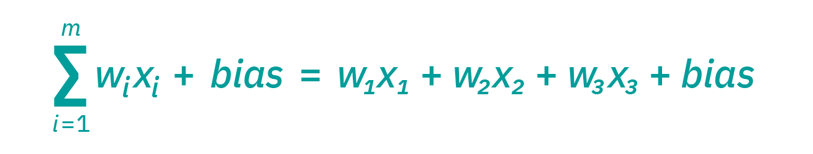
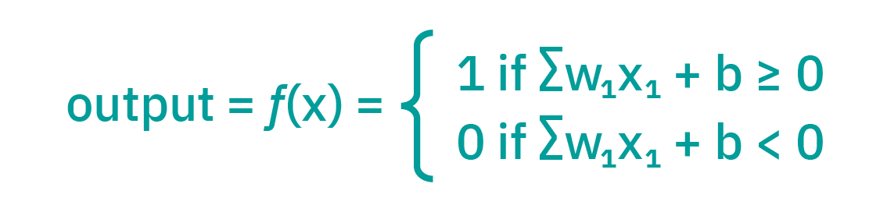
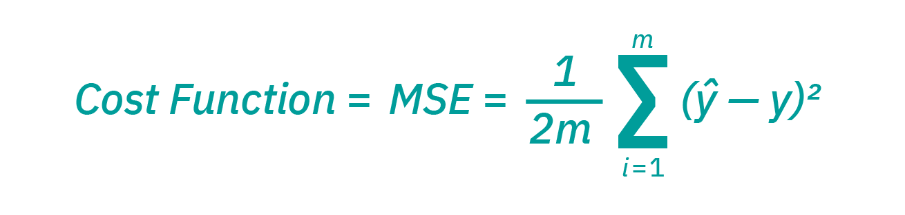
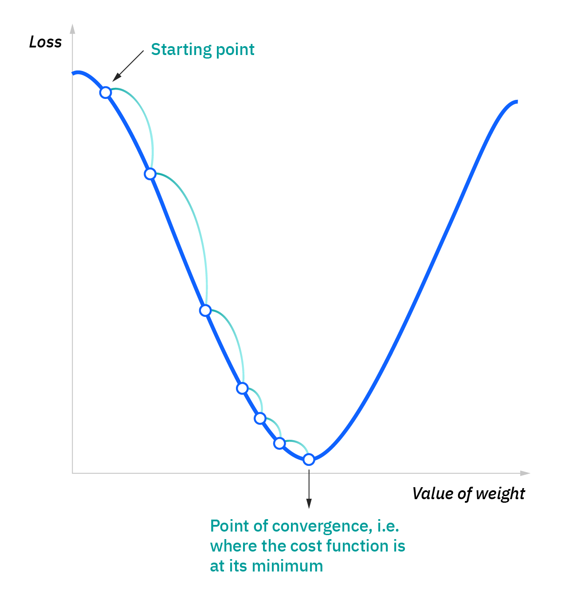

Neural networks, or artificial neural networks, are a type of deep learning algorithmn comprised of essentially three layers: an input layer, one or more hidden layers, and an output layer. The structure of a neural network is similar to that of neurons in the human brain.
IBM has a great technical explanation of how the layers interact with each other to create an output:
“Artificial neural networks (ANNs) are comprised of a node layers, containing an input layer, one or more hidden layers, and an output layer. Each node, or artificial neuron, connects to another and has an associated weight and threshold. If the output of any individual node is above the specified threshold value, that node is activated, sending data to the next layer of the network. Otherwise, no data is passed along to the next layer of the network.

“Think of each individual node as its own linear regression model, composed of input data, weights, a bias (or threshold), and an output. The formula would look something like this:


“Once an input layer is determined, weights are assigned. These weights help determine the importance of any given variable, with larger ones contributing more significantly to the output compared to other inputs. All inputs are then multiplied by their respective weights and then summed. Afterward, the output is passed through an activation function, which determines the output. If that output exceeds a given threshold, it “fires” (or activates) the node, passing data to the next layer in the network. This results in the output of one node becoming in the input of the next node. This process of passing data from one layer to the next layer defines this neural network as a feedforward network.”
One important thing to note is that a neural network implements a cost function to ensure that the model is not over or underfit.


After this point, the model stops training since the changes in the learning rate are at their lowest and the errors produced by the model are at a minumum.
Sources: https://www.ibm.com/cloud/learn/neural-networks https://towardsdatascience.com/a-concise-history-of-neural-networks-2070655d3fec https://analyticsindiamag.com/when-does-a-neural-network-fail-to-converge/#:~:text=In%20simple%20words%2C%20we%20can,training%20comes%20to%20a%20minimum.